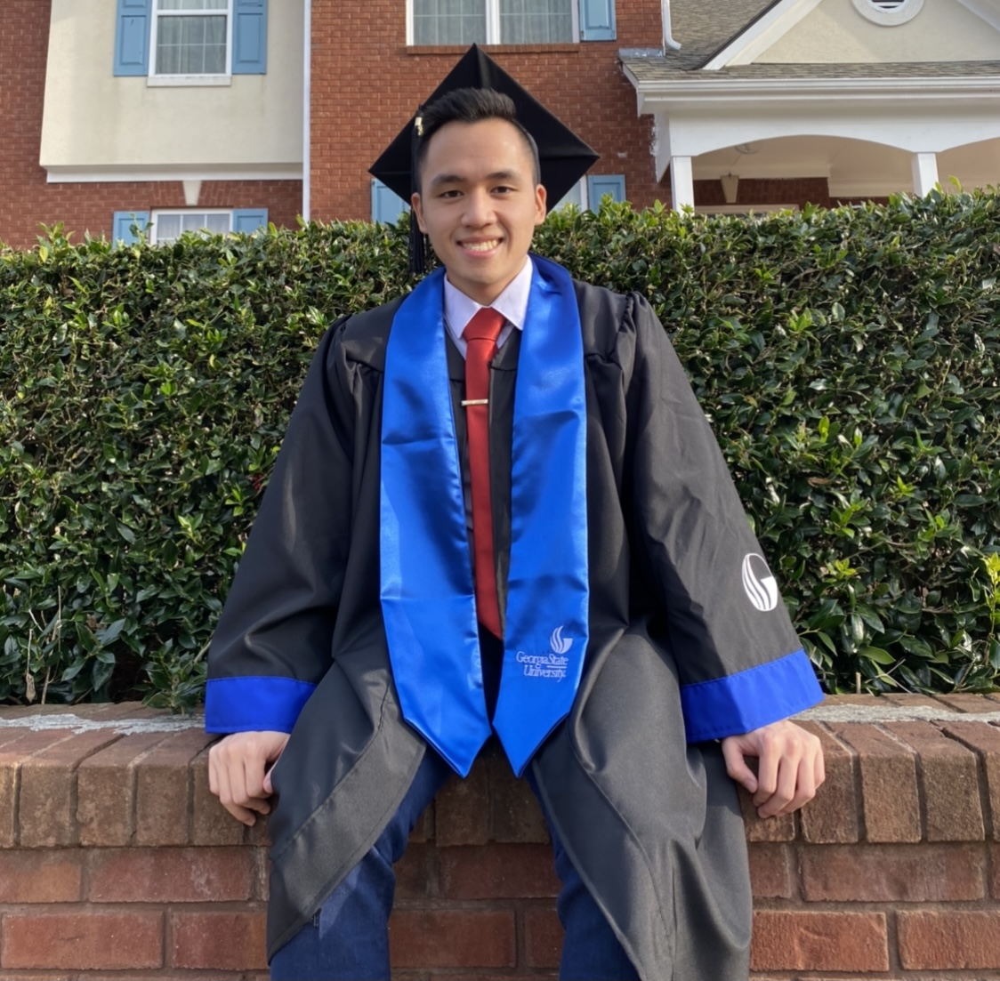
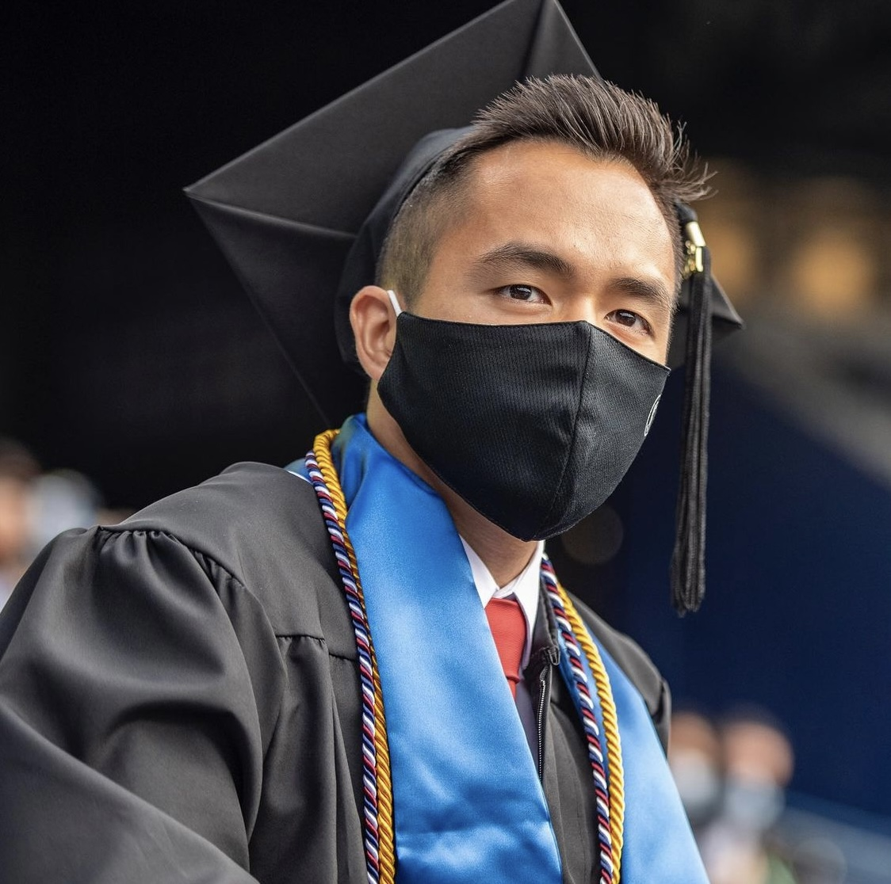
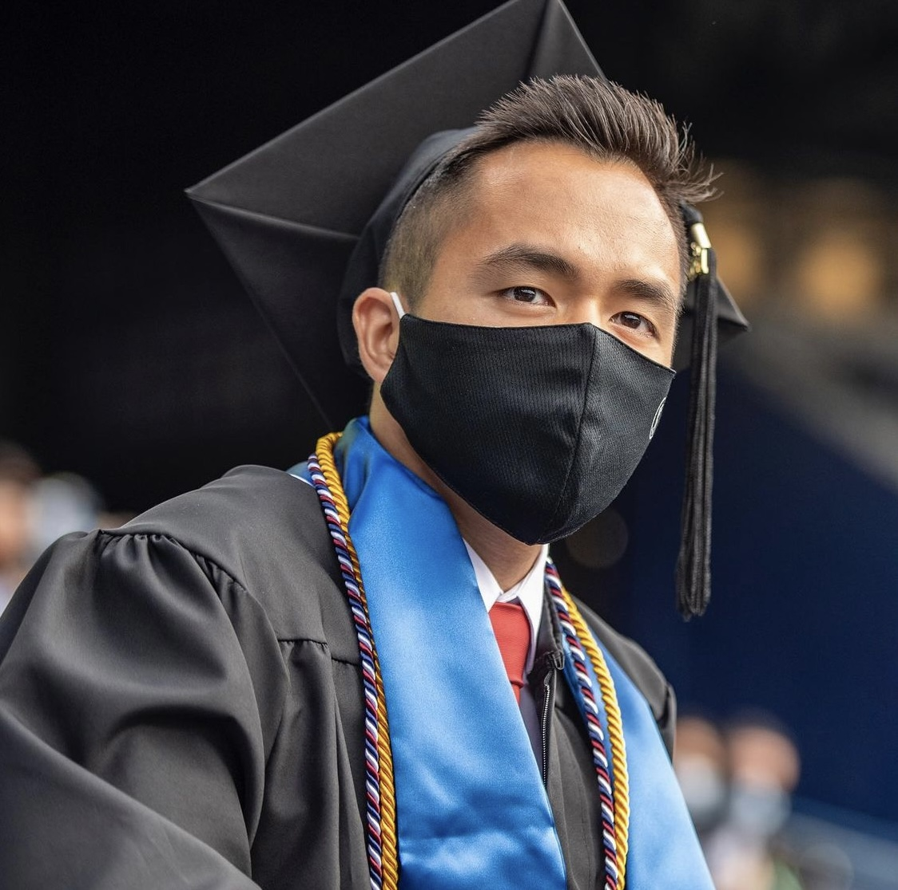
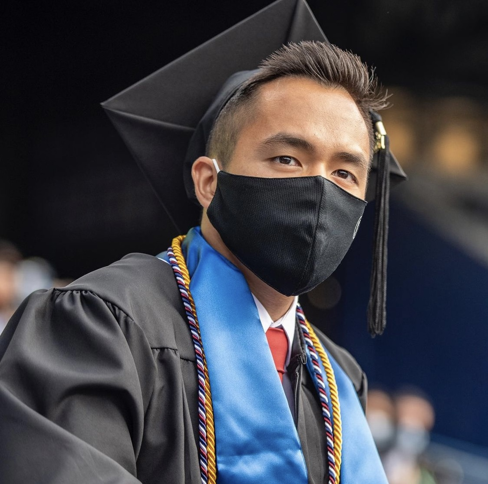
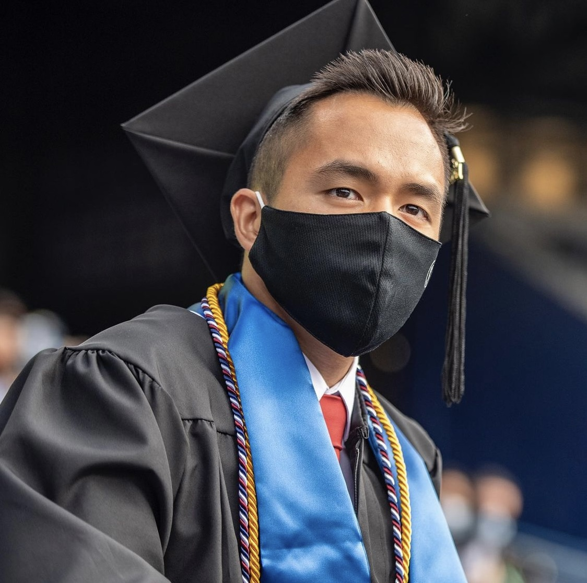

About Me
 



My name is Johnathan Nguyen and I wanted to share my journey with programming. I didn’t always enjoy coding, I started walking into my freshman year of college just as a Computer Science major because I always wanted to do something technical. I went into my first programming class and was completely lost. I remember the tests were so difficult and did not think I would make it through the class. I’ve had little to no experience with coding prior college. My friends were always telling me to switch to another major like Computer Information Systems, which is similar to Computer Science, but more business-related. However, that didn’t stick with me. My heart was telling me no, so I stuck with my guts and continued to keep my major as Computer Science. Entering into my sophomore year, one of my good friends I met in one of my CS classes switched his major to CIS, so I began asking him was it the right move for him? He kept telling me yes and how it’s less coding and how he liked it more. My sophomore year was pretty tough, this was when I started taking more CS classes and it only got harder. Now was when I really doubted myself and said, is this really what I want to do for the rest of my life? If I switch majors now, I’ll be so behind. I continued to stick with my guts and pursued my education in Computer Science. Now junior year came by and my life changed. I was a part-time advisor for Apple and still a full-time student at GSU. Facebook had a program with GSU where they were sending their engineers in residence to come to teach us. This professor that taught me Data Structures and Algorithms completely changed my view of coding. He told me all coding is really about is problem-solving. If you like problem-solving, you’ll love coding. I thought about it and it’s true. You are given a problem to solve, and you solve it by telling the computer what you want it to do. Sounds simple right? This professor gave me confidence that I chose the right major and wanted to keep doing this. This was the year that I’ve learned the most out of my entire time at GSU. Right before that semester ended, I landed my first internship as a Software Quality Assurance Analyst Intern at OneTrust for the Summer of 2020. Well, the entire world entered into one of the biggest pandemics we have faced. Covid-19 was spreading so rapidly. My internship was rescinded 5 days before the start date. At this time, I was still working for Apple, but I told them I was leaving because I had an internship lined up. Well the Summer of 2020 could’ve been a disaster. I had very little time to react, but I wasn’t mad at the company or anything. I understood that it wasn’t just me that this pandemic has affected. I still could have stayed with Apple and would have been moving up with them, but I wanted to take this time to truly learn code. I decided to quit my job at Apple and follow what I was passionate about. I viewed this an a door that opened me up to more opportunities. With so much time home, I did Hackerrank problems every day, learned to build this portfolio, and worked on many group projects with my friends. I've only also dealt with Java at GSU, and wanted to explore other languages. I started learning HTMl, Javascript, and CSS and absolutely loved it. The idea of being in control and solving problems became something I enjoyed more everyday. I knew everything happened for a reason, and my instructor told me that this summer is all going to be up to my mentality and how productive I’ll be. I didn’t want to waste 3 months of summer playing games all day or anything similar to it. Shortly after, I joined a company called HackYourOwn. At first, I started of as a Software Engineer Intern. During this time, I programmed a bot that would manage teams and members. Our channel grew to 1,000 members quick! Then, the founder really needed help, so I wanted to serve the community in any way that I could. Eventually, I moved up roles and became a Global Community Lead, where I created a project track for members that joined and managed teams on their performance. The Summer of 2020 was definitely a summer I'll never forget. You don't have the ability to control what goes on in the world, but you can control your mentality towards it. With the knowledge I have gained over the summer, I have graudated from university with Summa Cum Laude and received the Outstanding Senior Award fromt he GSU CS Honors and Awards Committee.
After I was a Software Engineer for about 2 months, I've taken more responsibilities and joined the Leadership team and became a Global Community Lead. I was more focused on the operation of how the program worked for project-based teams, as well as managing team members on their teams and receiving updates with how the program is working.